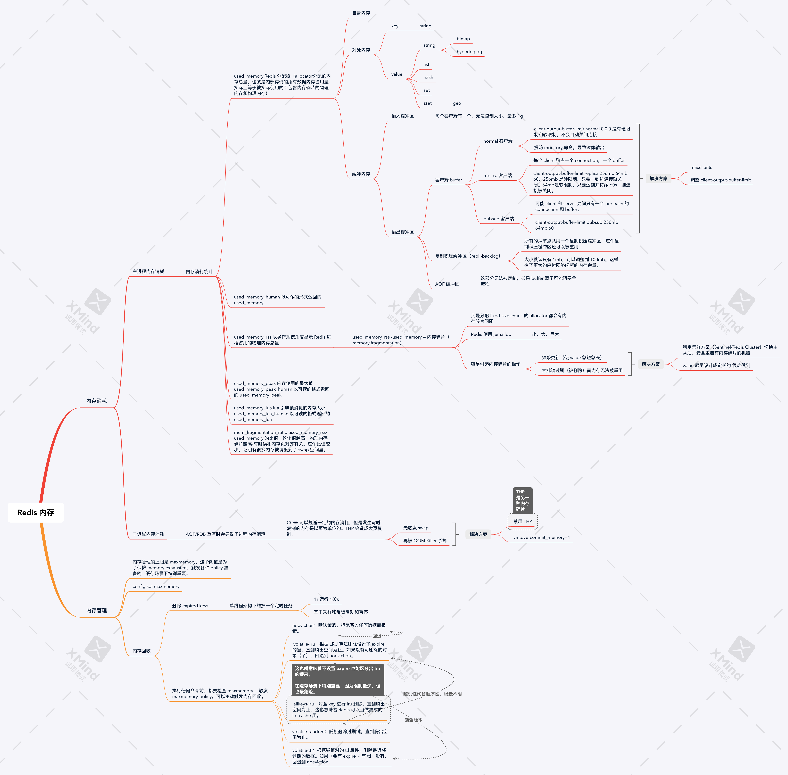

Redis 笔记之九：理解内存

内存是昂贵的资源，要合理地使用内存，首先要做到：
- 理解 Redis 的内存布局，以及它管理内存的方案
- 思考调优的方案
理解内存而能优化内存。
内存消耗
内存使用统计
1 | |
used_memory:1050880
used_memory_human:1.00M
used_memory_rss:2162688
used_memory_rss_human:2.06M
used_memory_peak:1051776
used_memory_peak_human:1.00M
used_memory_peak_perc:99.91%
used_memory_overhead:1037590
used_memory_startup:987792
used_memory_dataset:13290
used_memory_dataset_perc:21.07%
allocator_allocated:1005760
allocator_active:2124800
allocator_resident:2124800
total_system_memory:17179869184
total_system_memory_human:16.00G
used_memory_lua:37888
used_memory_lua_human:37.00K
used_memory_scripts:0
used_memory_scripts_human:0B
number_of_cached_scripts:0
maxmemory:0
maxmemory_human:0B
maxmemory_policy:noeviction
allocator_frag_ratio:2.11
allocator_frag_bytes:1119040
allocator_rss_ratio:1.00
allocator_rss_bytes:0
rss_overhead_ratio:1.02
rss_overhead_bytes:37888
mem_fragmentation_ratio:2.15
mem_fragmentation_bytes:1156928
mem_not_counted_for_evict:0
mem_replication_backlog:0
mem_clients_slaves:0
mem_clients_normal:49694
mem_aof_buffer:0
mem_allocator:libc
active_defrag_running:0
lazyfree_pending_objects:0
其中值得关注的值分别是：
- used_memory Redis 分配器（allocator分配的内存总量，也就是内部存储的所有数据内存占用量-实际上等于被实际使用的不包含内存碎片的物理内存和物理内存）
- used_memory_human 以可读的形式返回的 used_memory
- used_memory_rss 以操作系统角度显示 Redis 进程占用的物理内存总量
- used_memory_peak 内存使用的最大值
- used_memory_peak_human 以可读的格式返回的 used_memory_peak
- used_memory_lua lua 引擎锁消耗的内存大小
- used_memory_lua_human 以可读的格式返回的 used_memory_lua
- mem_fragmentation_ratio used_memory_rss/used_memory 的比值，这个值越高，物理内存碎片越高-有时候和内存页对齐有关。这个比值越小，证明有很多内存被调度到了 swap 空间里。
实际上 Linux 系统的很多系统指标都有 _human readable版本，Redis 基本模仿了这个设计。
（主进程）内存消耗划分
对象内存
对象内存是 Redis 内存中占用量最大的一块，实际上我们存储的所有数据都存在这个内存区域。
对象只分为 key 和 value。这一区域的大小大致上等于 sizeof(keys) + sizeof(values)。
keys 都是字符串。values 就是五种基本类型：字符串、列表、哈希、集合和有序集合（bitmap 和 hyperloglog 本质上是字符串，geo 数据是 zset）。
缓冲内存
客户端缓冲内存
客户端缓冲包括输入缓冲和输出缓冲。
Redis 的输入缓冲是无法控制的，默认就是每个客户端只能使用最多 1G 内存-Redis 的自保比较严格。
而输出缓冲则通过 client-output-buffer-limit 控制。
普通客户端
除了复制和订阅客户端以外的所有客户端。
Redis 的缺省配置是 client-output-buffer-limit normal 0 0 0。注意，0 意味着限制被禁用了，这是因为 Redis 认为普通客户端大部分情况下没有很多的数据输出，所以 normal 客户端相当于会有无限大的输出空间。但实际上有些特殊场景下还是需要限制输出缓冲的大小。比如如果客户端使用 monitor 命令，会有大量的输出堆积在 Redis 里，导致 Redis 的内存飙升。解决这个问题有两种思路：调整 maxclients 或者调整 client-output-buffer-limit。
从（Replica）客户端
Master 会单独为每个 slave 建立一条单连接。每个链接的默认配置是 client-output-buffer-limit replica 256mb 64mb 60。
其中 256mb 是硬限制，只要一到达连接就关闭。64mb是软限制，只要达到并持续 60s，则连接被关闭。
订阅（ pubsub）客户端
尚不明确到底对于同一个 channel的多个 pubsub 客户端是不是共用一个缓冲区。因为 Redis 没有消费组的概念，所有 client 即使是争抢同一个缓冲区也是有可能的-其实这样设计比较自然，因为多个缓冲区可能导致消息的重复 subscribe。另外，如果一个 pubsub 客户端订阅了多个 channels，也是共用同一个连接，这更增加了多个客户端共用一个缓冲区的可能性。其默认配置为：
client-output-buffer-limit pubsub 256mb 64mb 60
如上所述，订阅客户端的缓冲区大小会稍微大一些。
复制积压缓冲区
所有的从节点共用一个复制积压缓冲区，这个复制积压缓冲区还可以被重用，其大小默认只有 1mb，可以调整到 100mb。这样有了更大的应付网络闪断的内存余量。
AOF 缓冲区
AOF 重写期间，Redis 接收写命令不会停，必须使用 buffer-non-blocking的方案 之一就是使用 buffer，这部分 buffer 不能被定制。
内存碎片（Memory Framentation）
常见的内存分配器（allocator）有：glibc、tcmalloc和 jemalloc，Redis 使用 jemalloc。
allocator 为了更好地分配内存，一般总是 fixed-size 地分配对齐的内存块。在 64 位内存空间里，jemalloc 会把内存分为小、大、巨大三个范围。每个范围内有若干种大小不一的内存块。分配器会在分配内存的时候，选择尺寸最接近的大内存块分配内存（5kb 的内存通常会被分配在 8kb 的内存块里）。jemalloc 高度优化过内存碎片问题，通常情况下 mem_fragmentation_ratio 接近 1。
但当存储的 value 长短差异较大的时候，以下操作一样可以导致高内存碎片问题：
- 频繁做更新操作，比如频繁地执行 append、setrange 等更新操作。
- 大量过期键操作，会在内存空间里留下大量空洞-实际上批量删除键也一样。
为了解决这个问题，可以采取的潜在措施有：
- 使用数据对齐的内存。
- 使用 Sentinel 或者 Redis Cluster 的机制进行定期的主从切换，安全重启。
（子进程）内存消耗划分
在进行备份的时候，AOF/RDB 重写会 fork 子进程。因为 COW 机制，大部分情况下子进程和父进程共用一段物理内存，在子进程发生写的时候，子进程单独复制一页出来完成写操作。
THP（透明大页）的存在会导致内存拷贝时产生的页非常大，拷贝代价增多，这在写命令很多的时候会造成过度内存消耗。所以和 JVM 相反，应该关闭大页优化。
除此之外，应该设置 vm.overcommit_memory=1，允许内核充分使用物理内存。
内存管理
设置内存上限
内存管理的上限是 maxmemory，这个阈值是为了保护 memory exhausted，触发各种 policy 准备的 - 缓存场景下特别重要。
动态调整 maxmemory
这个值可以被动态修改，方便扩容缩容-JVM 就不可以。
如果不设置，Redis 默认 maxmemory 无限大。
内存回收策略
删除过期对象
Redis 所有的 Key 都可以 expire，key 会被保存在过期字典中（Redis数据库主要是由两个字典构成的，一个字典保存键值对，另一个字典就是保存的过期键的过期时间，我们称这个字典叫过期字典）。
Redis 为了节省 CPU，并不会精准删除 Redis 中的每个 Key，主要采用两个方案：
惰性删除
所谓的惰性删除，其实是只有发生特定的事件（读/写）的时候，才进行删除数据，并返回空值（nil）的一种策略。
这样做实际上避免了维护 ttl 链表（类似 Java 中的 LinkedHashMap），节省了 CPU。
惰性删除的缺点是，事件并不一定发生，或者过了很长的时间才发生，内存容易发生泄漏。这可能是所有事件驱动悬垂事件的缺点。
定时任务删除
Redis虽然是个单线程架构，但内部维护一个定时任务，默认每秒运行 10 次（可配置，不知道是不是 event loop 实现的）。
其基本流程为：

- 以慢模式启动。
- 每次执行时针对每个 db 空间随机采样 20 个 key，进行超时检验并删除 key，并采样统计。
- 如果没有 25% 的 key 过期，任务退出。
- 否则循环执行删除 key 的操作。
- 如果最终执行超过 25 ms 或者统计数据低于 25%以后，直接退出。
- 否则每次 Redis 事件发生以前用快模式删除 Key。
快模式和慢模式的流程一样（也就是和上面一样），但超时时间短很多，只有 1ms，且 2 s 内只能运行一次。
内存溢出控制策略
内存使用量(实际上应当是去掉缓冲区内存后的对象内存)一旦到达 maxmemory，Redis 就要开始 evict 操作。基于 maxmemory-policy，Redis 一共有 6 种策略：
- noeviction：默认策略。拒绝写入任何数据而报错。
- volatile-lru：根据 LRU 算法删除设置了 expire 的键，直到腾出空间为止。如果没有可删除的对象（了），回退到 noeviction。
- allkeys-lru：对全 key 进行 lru 删除，直到腾出空间为止-这也就意味着不设置 expire 也能区分出 lru 的键来，这也意味着 Redis 可以当做准成的 lru cache 用。
- volatile-random：随机删除过期键，直到腾出空间为止。
- volatile-ttl：根据键值对的 ttl 属性，删除最近将过期的数据。如果（要有 expire 才有 ttl）没有，回退到 noeviction。
每次执行命令时，Redis 都会检查 maxmemory，尝试进行内存回收工作。内存回收造成的 delete 还会被同步到从节点，造成写放大-凡是主从模式都要考虑写放大问题。
因为这个值可以动态调整，所以可以动态触发 Redis 缩容，这是 JVM 做不到的。
内存优化
redisObject 对象
Redis 中的值对象在内部定义为 redisObject 结构体。

其内容为：
- type：type 会返回value（not key）的数据类型。
- encoding：同一种类型的 value，使用不同的 encoding 差别也会非常大。
- lru：记录对象被最后一次访问的时间。这对allkeys-lru 和 volatile-lru 场景下特别有用。
- refcount 记录当前对象被引用的次数。refcount=0 意味着对象可以被安全回收。
- *ptr 如果是整数则储存整数，否则指向数据内存段。
缩减键值对象
应该尽量减少 key 和 value 的长度。
- 在完整描述业务的情况，key 越短越好。
- value 应该被序列化前尽量精简对象，使用最好的序列化算法+压缩算法（考虑 snappy）。
共享对象池
共享对象池就是整数对象池，不像 JVM，不存在其他类型的对象池。
类似 Java 中的字符串 intern 池和 wrapper cache，Redis 会自动复用[0-9999]的整数对象池。5 种类型的 value 一旦涉及整数，也会引用整数对象池。
使用
127.0.0.1:6379> set foo 2
OK
127.0.0.1:6379> object refcount foo
(integer) 2147483647
这个对象池的大小可以通过 REDIS_SHARED_INTEGERS 来定义，不能config set。类似 JVM。
如果 maxmemory-policy 为 volatile-lru 或者 allkeys-lru，整数对象池会无效化，否则这两种策略无法好好工作。
字符串优化
字符串没有使用 c 语言的字符串类型，而使用了 sds（simple dynamic string：
- 大量操作时间复杂度O（1）。
- 可保存字节数组
- 有预分配机制-会在 append 场景下造成内存损耗。
- 有惰性删除机制。
某些场景下，使用 hash 来重构字符串类型的数据结构更节省内存。
编码优化
Redis 的特点就是“all in memory”。
可以使用config set来调整某些类型的内部编码的阈值，使数据编码从压缩编码（小编码）向非压缩编码转换（大编码）。其中 ziplist 是一种特别优秀、紧凑的数据结构，会使用线性连续的内存。
重点值得用是 ：
- ziplist（list，hashtable，zset 都可以用），节省内存但规模大了以后消耗 cpu
- intset 节省内存